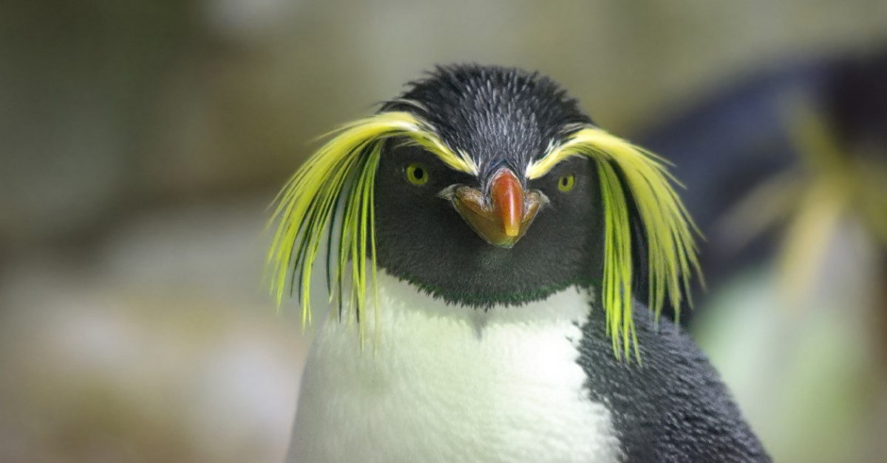

Pinguïns of vetganzen zijn een orde van niet-vliegende zeevogels die alleen voorkomen op het zuidelijk halfrond. De pinguïns behoren tot de orde Sphenisciformes, klasse Aves (vogels). Alle moderne pinguïns behoren tot de familie van de Spheniscidae, maar er zijn uitgestorven soorten die buiten deze kroongroep vallen.
De pinguïns zijn gemakkelijk te onderscheiden van andere vogels en ze zijn volledig aangepast aan extreme koude en het leven in de zee. Ze hebben bijvoorbeeld een warm verenkleed. Pinguïns gebruiken hun vleugels om door het water te vliegen net zoals andere vogels door de lucht vliegen. Ze kunnen met een snelheid tot 30 km per uur door het water vliegen. De naam "pinguïn", die waarschijnlijk komt van het Keltische pen gwyn (witte kop), werd oorspronkelijk gebruikt voor de reuzenalk, de inmiddels uitgestorven tegenhanger (geen nauwe verwant) van de pinguïn op het noordelijk halfrond
Pinguïns of vetganzen zijn een orde van niet-vliegende zeevogels die alleen voorkomen op het zuidelijk halfrond. De pinguïns behoren tot de orde Sphenisciformes, klasse Aves (vogels). Alle moderne pinguïns behoren tot de familie van de Spheniscidae, maar er zijn uitgestorven soorten die buiten deze kroongroep vallen.
De pinguïns zijn gemakkelijk te onderscheiden van andere vogels en ze zijn volledig aangepast aan extreme koude en het leven in de zee. Ze hebben bijvoorbeeld een warm verenkleed. Pinguïns gebruiken hun vleugels om door het water te vliegen net zoals andere vogels door de lucht vliegen. Ze kunnen met een snelheid tot 30 km per uur door het water vliegen. De naam "pinguïn", die waarschijnlijk komt van het Keltische pen gwyn (witte kop), werd oorspronkelijk gebruikt voor de reuzenalk, de inmiddels uitgestorven tegenhanger (geen nauwe verwant) van de pinguïn op het noordelijk halfrond
Het zijn sterke zwemmers, ze trotseren de koudste klimaten en ze zijn ook nog eens enorm schattig. De pinguïn verovert ieders hart en is een bijzondere zeevogel die niet kan vliegen. Je kent misschien wel een aantal pinguïnsoorten, maar wist je dat er in totaal achttien verschillende pinguïns zijn? Op deze site kan jij niet alleen vinden welke 18 soorten penguïn soorten dat zijn, maar ook feiten over de ze!
De verschillende soorten pinguïns kan je vinden door hier op te klikken.